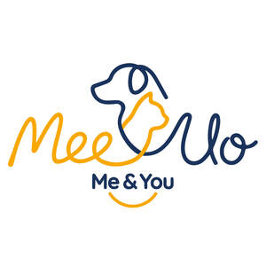

Trade Mark Journal No.2026/008 20 February 2026
UK00004335551 4 February 2026 (18,21,28)

- Class 18
- Clothing for pets; Coats for animals; Raincoats for animals; Cooling coats and vests for animals; Anxiety relief coats for animals [weighted or compression vests]; Thermal protection coats for animals; Reflective coats for animals; Drying coats for animals; Costumes for animals; Party hats for pets; Bow ties for pets; Pet snoods; Bandanas [neckerchiefs] for animals; Collars for animals; Silencers for pet tags; Leashes for animals; Hands-free leashes for animals; Retractable leashes for animals; Training leads for animals; Harnesses for animals; Muzzles; Protective footwear for animals; Non-slip socks for animals; Carrying bags for animals; Wheeled carrier bags for animals; Backpacks for carrying animals; Bubble backpacks for carrying animals; Slings for carrying animals; Animal carriers [bags]; Rain covers for animal carrier bags; Belly belts for animals; Saddlebags adapted for use by animals; Feed bags for animals; Treat bags for training animals; Pouches for holding animal waste bags; Waste bag dispensers adapted for leashes; Holders and cases adapted for animal tracking devices [GPS tags]; Car safety harnesses for pets; Identification tags of leather for animals; Rawhide chews for animals; Blankets for animals; Protective coverings for animals; Saddle cloths for animals; Whips; Spare parts and fittings for all the aforesaid goods; All the aforesaid strictly for use with animals and excluding bags, clothing, and travel goods adapted for human use.
- Class 21
- Bowls for animals; Feeding vessels for animals; Slow-feeding bowls for animals; Sensor-activated pet feeders [battery operated]; Lick mats for animals; Collapsible travel bowls for animals; Portable water bottles for animals; Travel bottles with built-in bowls for animals; Automated food dispensers for animals [battery operated]; Syringes for feeding pets; Vacuum food storage containers for animals; Cremation urns for pets; Scoops for animal food; Animal food storage containers; Place mats, not of paper or textile, for animal feeding bowls; Cooling bowls for pets; Portable paw cleaners for pets [non-electric]; Drinking troughs for animals; Bird baths; Bird cages; Rings for birds; Perches for bird cages; Indoor aquaria; Aquarium tanks; Aquarium ornaments [porcelain, ceramic or plastic]; Terrariums (indoor) for plant culture; Terrariums for animals; Terrariums for insects; Hides for reptiles and small animals; Gravel, sand and pebbles for aquariums; Litter trays for animals; Training trays for housebreaking animals; Stainless steel litter boxes for animals; Scoops for the disposal of animal waste; Grooming gloves for animals; Brushes for animals; Deshedding brushes for animals; Combs for animals; Flea combs; Lint rollers for floors and clothing [adhesive]; Pet hair removers being lint rollers; Cleaning sponges for removing animal hair; Toothbrushes for animals; Finger toothbrushes for animals; Nail brushes for animals; Cages for household pets; Cages for carrying animals; Mangers for animals; All the aforesaid being exclusively for use with animals and excluding household utensils intended for human use.
- Class 28
- Toys for animals; Snuffle mats being toys for animals; Play mats containing catnip for cats; Treat dispensing toys for animals; Chew toys for animals; Teething toys for animals; Squeaky toys for animals; Rope toys for animals; Ball launchers for animals; Agility obstacles for animals; Plastic swimming pools for animals; Ball pits for animals; Puzzle toys for animals; Exercise wheels for animals; Tunnels for animals [toys]; Scratching posts for animals; Interactive electronic toys for animals; Electronic activity toys for animals; Wind-up toys for animals; Clickers [toys] for training animals; Flying discs for pets; Floating toys for pets; Scentwork training aids being toys for animals; Plush toys for animals; Toys containing catnip; Toys made of natural materials for animals; Artificial bones for animals [toys]; Toy imitation food for animals; Christmas stockings for animals; All the aforesaid being exclusively for use with animals and excluding toys for children, ride-on toy vehicles, skateboards, and sporting equipment for humans.
SHIRDAL LTD